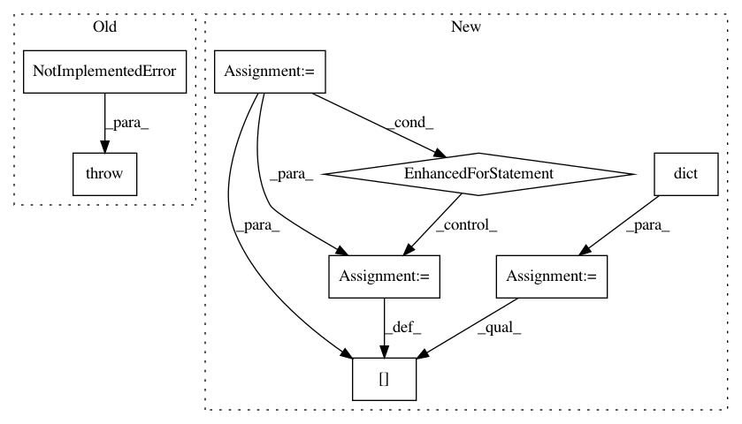

1780833b30d953509200bf9560be2ba42fabe9ff,tensorboard/plugins/debugger_v2/debug_data_provider.py,LocalDebuggerV2DataProvider,read_blob_sequences,#LocalDebuggerV2DataProvider#Any#Any#Any#Any#,95
Before Change
):
del experiment_id, plugin_name, downsample, run_tag_filter // Unused.
// TODO(cais): Implement this.
raise NotImplementedError()
def read_blob(self, blob_key):
del blob_key // Unused currently.
// TODO(cais): Implement this.
After Change
for run in run_tag_filter.runs:
if run not in existing_runs:
continue
output[run] = dict()
for tag in run_tag_filter.tags:
if tag.startswith(EXECUTION_DIGESTS_BLOB_TAG_PREFIX):
output[run][tag] = [
provider.BlobReference(blob_key="%s.%s" % (tag, run))
]
return output
def read_blob(self, blob_key):
if blob_key.startswith(EXECUTION_DIGESTS_BLOB_TAG_PREFIX):
In pattern: SUPERPATTERN
Frequency: 3
Non-data size: 8
Instances
Project Name: tensorflow/tensorboard
Commit Name: 1780833b30d953509200bf9560be2ba42fabe9ff
Time: 2020-01-06
Author: cais@google.com
File Name: tensorboard/plugins/debugger_v2/debug_data_provider.py
Class Name: LocalDebuggerV2DataProvider
Method Name: read_blob_sequences
Project Name: thenetcircle/dino
Commit Name: 46ad858e7284a026c02fff43146f2ec422d3449e
Time: 2016-10-25
Author: oscar.eriks@gmail.com
File Name: dino/db/redis.py
Class Name: DatabaseRedis
Method Name: get_acls_channel
Project Name: brian-team/brian2
Commit Name: b19d0834272dbe109dbc38045f4fe02ed92c8b85
Time: 2015-07-22
Author: marcel.stimberg@ens.fr
File Name: brian2/groups/group.py
Class Name: Group
Method Name: get_states